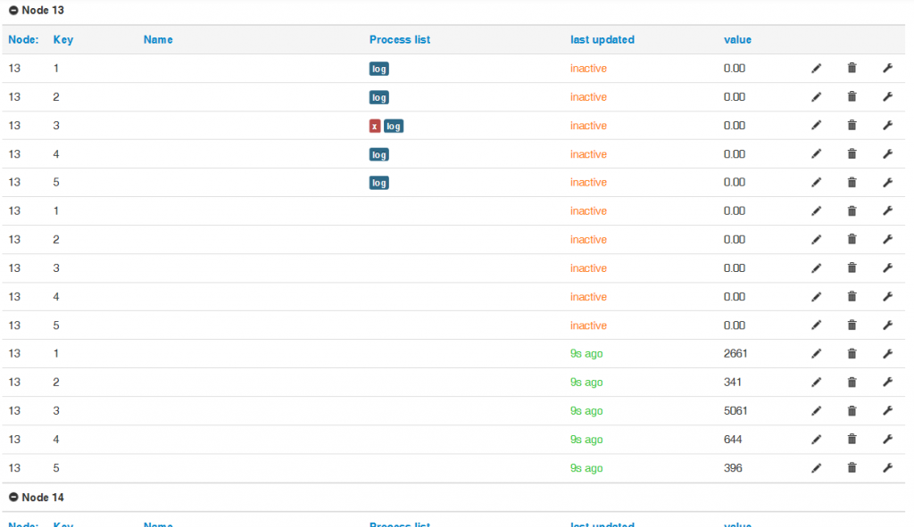

Hi,
Yesterday some of input IDs have changed. Now old inputs are inactive and Nodes have duplicate inputs. What has happened?
Archived Forum |
|
Inputs IDs changed in emoncms.orgSubmitted by mauzer on Fri, 28/11/2014 - 08:50Hi, Yesterday some of input IDs have changed. Now old inputs are inactive and Nodes have duplicate inputs. What has happened? » |
Re: Inputs IDs changed in emoncms.org
I'm afraid I can't answer "why?" but I can confirm I have gained some duplicated inputs too. most of my nodes now have 3 complete sets of inputs and only the last set is active.

All the effected feeds stopped logging 27/11/2014 16:31:19.
Something odd about my oldest node is that only input 6 has replicated whilst input 1 to 5 have not. Input 1 - 5 have been there over a year where as 6 was only added recently, I don't know if that has any meaning, as older nodes with no new inputs have not duplicated so it seems to relate to the age of the input.
When i deleted the 2 "extra input 6's" the original 1st "input 6" then continued to update, unfortunatly I guess the data since 4:30 yesterday is lost as the new inputs are not logging to feeds. I have attached before and after "deletion of extra inputs" pics.
Paul
Re: Inputs IDs changed in emoncms.org
My apologies, I did a server upgrade and restart yesterday at 16:30 on emoncms.org. I mistakenly did not shut down and save redis in the right order which would have caused the new inputs to be created. I didnt see the effect of this at the time as I think it only affected a small proportion of accounts. I've deleted all these empty inputs using an automated script and an see they are now linked correctly again for you paul and mauzer.
My apologies!
Trystan
Re: Inputs IDs changed in emoncms.org
Thank you Trystan!
[Multiple posts deleted - Moderator (RW)]